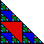

This is not such a surprise - the gasket often comes up in some way or other.
| Suppose we look at Pascal's triangle with 128 rows, with 256 rows, with 512
rows, with 1024 rows, ..., each time halving the size of the individual boxes. The
limiting shape is a gasket. |
| This gasket represents all the odd coefficients in the expansion of
(x + y)n for all n. |
| The empty triangles - the holes in the gasket - correspond to all the
even coefficients. |
| What fraction of all the binomial coefficients is even? |
| Suppose the gasket has base 1 and altitude 1. What is the area of the regions
that correspond to even numbers? |
| 1 triangle of area (1/2)(1/2)(1/2) = 1/8 |
| 3 triangles of area (1/2)(1/4)(1/4) = 1/32 |
| 9 triangles of area (1/2)(1/8)(1/8) = 1/128 |
| ... |
|
 |
|
| The area of the even triangles is 1/8 + 3/32 +
9/128 + ... , a geometric series with first term 1/8
and ratio 3/4, hence summing to 1/2. |
| That is, in the limit of larger and larger binomials, a vanishingly
small fraction of the coefficients is odd. This is not at all apparent from
inspecting the first few rows of Pascal's triangle. |
| Here's another way to see this. In the n -> infinity limit,
the odd coefficients form a gasket of dimension log(3)/log(2).
The full triangle is 2-dimensional, and for any d < 2, a
d-dimensional set has 2-dimensional measure 0. |